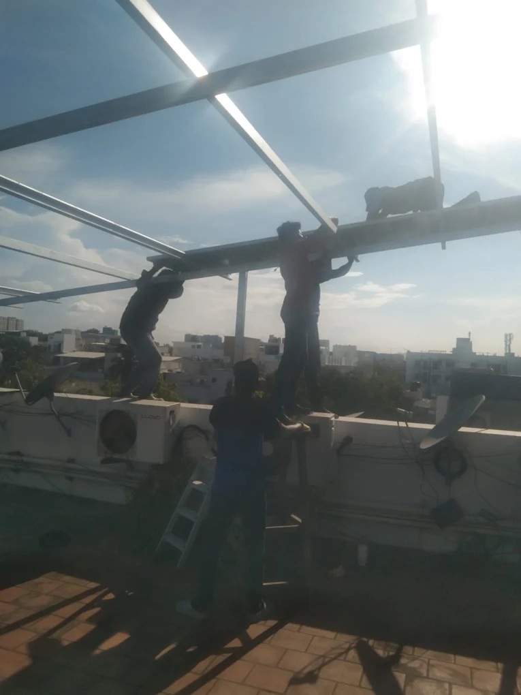

01
Written yes
On a block, the association note comes before a layout. A verbal promise from one neighbour is not enough to order steel.
Thiruvanmiyur flats and lane houses
The first limit is the roof your household is allowed to stand on. A block beside East Coast Road and a lane house near the temple do not get the same drawing. ZeroEB checks that from Madipakkam before a wattage is named. The look is free.

Two roofs, two answers
Closer to the beach and along East Coast Road, a lot of homes are flats. The terrace is common property, often already holding air conditioners, tanks, and dish antennas. An empty-looking corner is not yours until the association says so in writing. Inland, in Valmiki Nagar and in the lanes around the Marundeeswarar temple, the roof is more often a house terrace. The tank and the stair room have usually taken the best of it. We measure what remains.
Module choice for the wider city is on panels for a Chennai home. Avenue trees are the Besant Nagar limit. Here the stop is permission, a roof that is already full, and a film of salt plus road dust.
Shared roof firstClear patch onlySalt and road dustWhat goes on the quote
On a block, the association note comes before a layout. A verbal promise from one neighbour is not enough to order steel.
Tanks, stair rooms, and outdoor units come off the drawing. A walkway stays, so nobody has to step on the glass to reach the parapet.
East Coast Road traffic and sea air leave a film. Frames, clamps, and cable glands are specified for that, and the path is there so the glass can be washed.
Central assistance needs cells and modules made in India. Eligible homes can receive up to ₹78,000. The figure still follows the scheme rules on the day you apply.
Who can go ahead
An independent house can usually decide for itself. A top-floor flat can proceed only after the association has allowed that household to use the terrace. A ground-floor home with no terrace rights waits. A balcony, a setback, or a car porch is not a place we will mount a plant.
Modules you have already bought are fitted as labour. The scope is on installation services. How to read the money, including the subsidy gap, is on panel and price. If East Coast Road dust is the worry after switch-on, washing is a later visit and is described under panel cleaning. NDCR against DCR is in that guide before a cheaper import is locked.
Questions from this locality
Yes. The roof look is free. Send the latest bill and, if the terrace is shared, whatever the association has already put in writing. Nothing is ordered that day.
No. An empty roof is not permission. We need the association to confirm that your household may use it. Without that note we do not draw a layout.
Traffic film and sea air settle on the glass. The layout keeps a path for washing, and the quote names hardware that can live with salt and grit. Washing later is a separate visit.
DCR modules, made in India as cells and modules. Eligible homes can receive up to ₹78,000, under the scheme rules then in force. NDCR is only if that subsidy has already been given up.
A free look from the Madipakkam team. We record who may use the roof, how much of it is free, and whether the plant should be DCR.
Request your free quote →